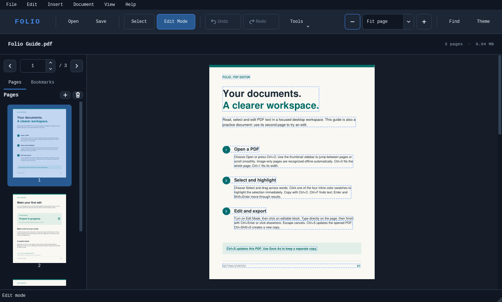

Edit text where it sits
Change words, format text, replace images, and move or resize objects right on the PDF page.
Free and open source
Edit text right on the page, organize PDFs, and make scans searchable. Your files stay on your computer.
Windows 10 / 1164-bit

The workspace
Change words, format text, replace images, and move or resize objects right on the PDF page.
Find and copy text from scanned pages. In Edit Mode, you can also correct recognized words in place.
Reorder, crop, merge, or split PDFs. Add bookmarks, fill forms, and place handwritten signatures.
On-device processing
Folio recognizes text on image-only pages using built-in Tesseract OCR. It can detect the language locally, and you can choose another language in Settings. Opening, editing, and saving work offline too.
Need to share a copy? Export with redactions or add a password before sending it.
English, Bosnian, French, Arabic, Hindi, Japanese, Chinese, and more.
See all languagesWindows desktop app
Choose the installer or portable ZIP on the release page.
Choose the Setup .exe for a regular Windows installation, with a Start menu shortcut and PDF Open with support. Choose the Portable ZIP to run Folio from an extracted folder.
Yes. Once you have the installer or portable ZIP, you can set up Folio, edit PDFs, and run OCR offline. The download already includes the language packs and runtime.
Folio is built for 64-bit Windows 10 (version 2004 or later) and Windows 11.